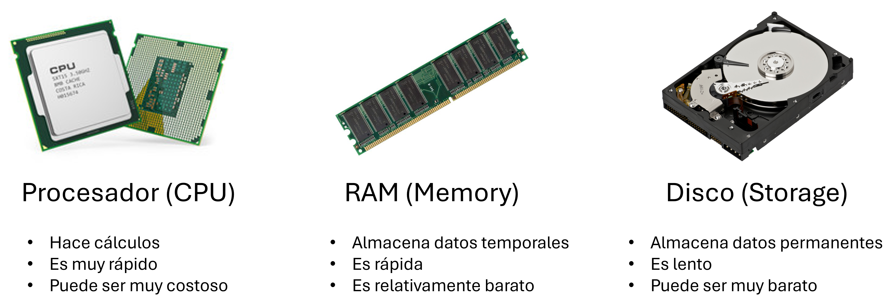
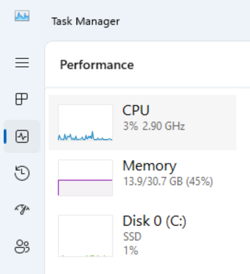
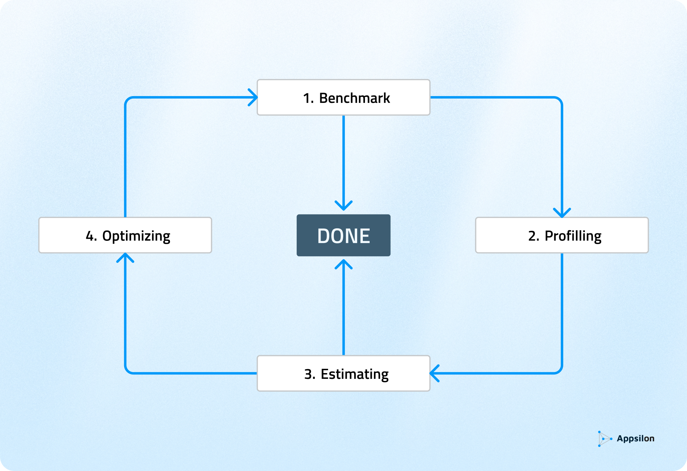
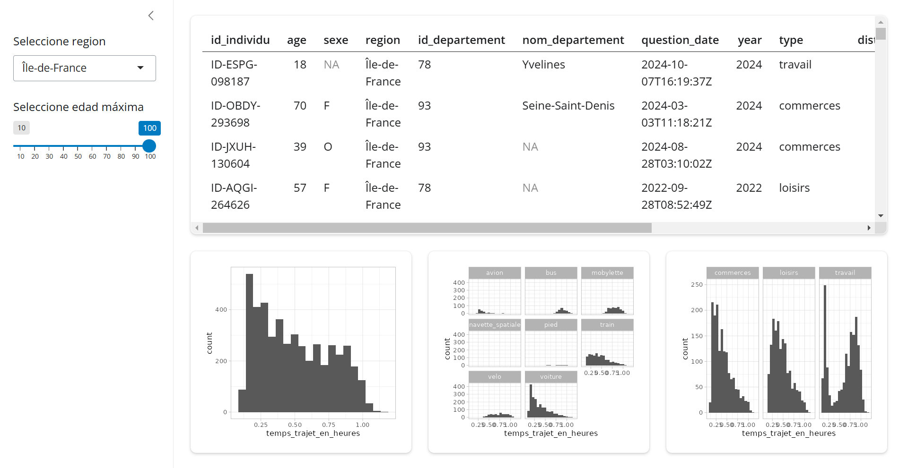
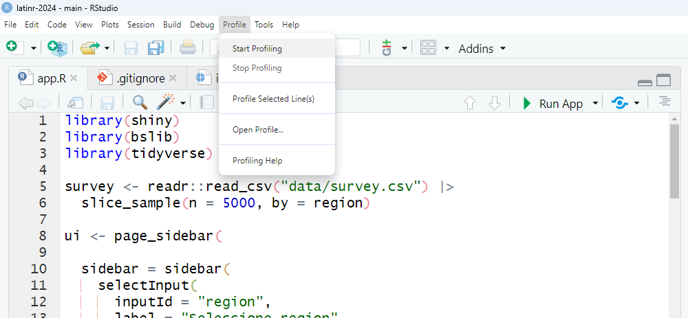
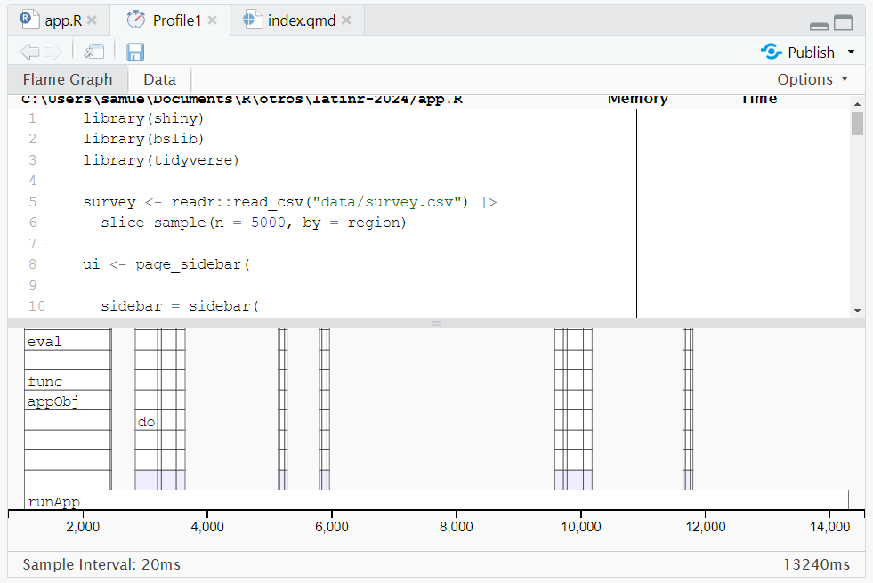
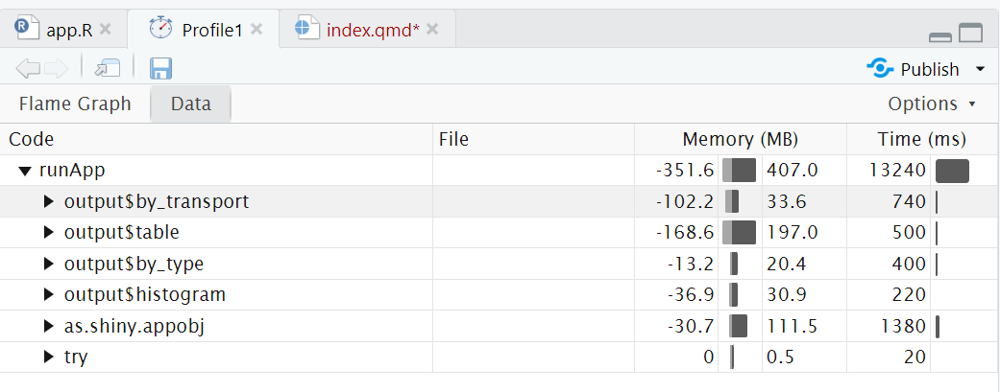
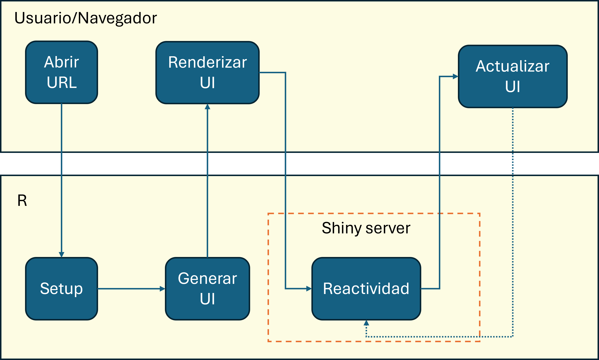

Optimizing Performance in Shiny
Tips and Best Practices
Material
Workshop Structure (3 hours)
- Introduction
- Optimization Cycle: Exercise 1 - Benchmarking
- Profiling: Exercise 2
- Optimization - Data: Exercise 3
- Optimization - Shiny: Exercise 4
- Optimization - Async: Exercise 5
- Advanced Topics
- Q&A
Introduction
Appsilon
We are hiring!
To see more open positions: https://www.appsilon.com/careers
whoami
- Political Scientist, now also R shiny developer
- From Lima, Perú
- Contact:
Who are you?
- Share in the chat:
- Name
- Where are you from? What time is it there?
- Background (briefly!)
- Your favorite niche R package
Optimization Cycle
First Things First
What is a computer? The interaction of three main components
What is Optimization?
It depends on the need!
In general, think in terms of time (CPU) or space (memory/storage). Money is a hidden factor.
The Cycle Illustrated
https://www.appsilon.com/post/optimize-shiny-app-performance
Key Aspects at Each Stage
- Benchmarking: Does it perform as expected?
- Profiling: Where are the bottlenecks?
- Estimation/Recommendation: What can be done?
- Optimization: Make decisions and implement
Types of Benchmarking
- Manual
- Advanced (shinyloadtest)
Exercise 1 - Benchmarking
- Test the app and note how long it takes to display the information for:
- 3 different cities
- 3 different maximum ages
- 3 different cities
Link: https://01933b4a-2e76-51f9-79f4-629808c48a59.share.connect.posit.cloud/
Profiling
Profiling - Tools in R
Profiling is a technique used to identify performance bottlenecks in your code.
{profvis}
An interactive tool that provides a detailed visualization of your code’s execution time.
- Installation:
- Basic usage:
shiny.tictoc
A tool that uses JavaScript to measure the time taken by actions in the app from the browser’s perspective.
It is very easy to add to a Shiny app:
tags$script(
src = "https://cdn.jsdelivr.net/gh/Appsilon/shiny.tictoc@v0.2.0/shiny-tic-toc.min.js"
)- If you’re unfamiliar with adding JavaScript: Packaging JavaScript code for Shiny
Run any of these operations in the JavaScript console.
// Print out all measurements
showAllMeasurements()
// To download all measurements as a CSV file
exportMeasurements()
// To print out summarised measurements (slowest rendering output, slowest server computation)
showSummarisedMeasurements()
// To export an html file that visualizes measurements on a timeline
await exportHtmlReport()Many browsers have developer tools where you can find a profiler while your app is running.
Using profvis
Locate the tool in RStudio.
The R console will display the “Stop profiling” button. This means the profiler is active.

Run your Shiny app and interact with it. Then, you can stop the app and the profiler.
The RStudio source panel will display a new view.
The upper section profiles each line of code, while the lower section displays a FlameGraph, indicating the time required for each operation.
You can also access the “Data” tab.
This section shows how much time and memory each operation requires, providing a summary of the measurement.
For a more in-depth review of {profvis}, you can refer to the official documentation:
- Examples: https://profvis.r-lib.org/articles/rstudio.html
- Integration with RStudio: https://profvis.r-lib.org/articles/rstudio.html
Exercise 2 - Profiling
Perform profiling on the “app.R” file.
- Interpret the results:
- What are the most critical points?
Keep in mind that you are testing this for a single user.
Optimization - Data
- Use faster options for loading data
- Use more efficient file formats
- Pre-process calculations
- Use databases (may require learning SQL)
You can combine all these strategies!
Loading Data Faster
data.table::fread()
vroom::vroom()
readr::read_csv()
Example
DO NOT run during the workshop as it takes time to execute.
suppressMessages(
microbenchmark::microbenchmark(
read.csv = read.csv("data/personal.csv"),
read_csv = readr::read_csv("data/personal.csv"),
vroom = vroom::vroom("data/personal.csv"),
fread = data.table::fread("data/personal.csv")
)
)
#> Unit: milliseconds
#> expr min lq mean median uq max neval
#> read.csv 1891.3824 2007.2517 2113.5217 2082.6016 2232.7825 2442.6901 100
#> read_csv 721.9287 820.4181 873.4603 866.7321 897.3488 1165.5929 100
#> vroom 176.7522 189.8111 205.2099 197.9027 206.2619 495.2784 100
#> fread 291.9581 370.8261 410.3995 398.9489 439.7827 638.0363 100Efficient Data Formats:
- Parquet (via
{arrow})
- Feather (compatible with Python)
- fst
- RDS (native to R)
Example
DO NOT run during the workshop as it takes time to execute.
suppressMessages(
microbenchmark::microbenchmark(
read.csv = read.csv("data/personal.csv"),
fst = fst::read_fst("data/personal.fst"),
parquet = arrow::read_parquet("data/personal.parquet"),
rds = readRDS("data/personal.rds")
)
)
#> Unit: milliseconds
#> expr min lq mean median uq max neval
#> read.csv 1911.2919 2075.26525 2514.29114 2308.57325 2658.03690 4130.748 100
#> fst 201.1500 267.85160 339.73881 308.24680 357.19565 834.646 100
#> parquet 64.5013 67.29655 84.48485 70.70505 87.81995 405.147 100
#> rds 558.5518 644.32460 782.37898 695.07300 860.85075 1379.519 100Pre-processing Calculations
- Pre-filtering: Reduces size
- Pre-transforming or aggregating: Saves time
- Using indexes: Enables fast searches
This is essentially caching, which is personally my favorite strategy.
It can be challenging to use if real-time calculations are required (e.g., stock exchange, streaming data) or if data storage is restricted due to security or privacy concerns.
Without pre-processing
With pre-processing
Relational Databases
- Scalability: Databases can efficiently handle large volumes of data.
- Fast Queries: They allow complex queries to be performed quickly.
- Persistence: Data is stored persistently, allowing for retrieval at any time.
Some notable examples are SQLite, MySQL, PostgreSQL, DuckDB.
freeCodeCamp offers a good course for beginners.
Exercise 3 - Data
Implement an optimization strategy
Optimization - Shiny
When an app starts
On the Shiny side, optimization basically consists of making the app (actually, the CPU) do as little work as possible.
Reducing reactivity
server <- function(input, output, session) {
output$table <- renderTable({
survey |>
filter(region == input$region) |>
filter(age <= input$age)
})
output$histogram <- renderPlot({
survey |>
filter(region == input$region) |>
filter(age <= input$age) |>
ggplot(aes(temps_trajet_en_heures)) +
geom_histogram(bins = 20) +
theme_light()
})
}reactive() to the rescue
server <- function(input, output, session) {
filtered <- reactive({
survey |>
filter(region == input$region) |>
filter(age <= input$age)
})
output$table <- renderTable({
filtered()
})
output$histogram <- renderPlot({
filtered() |>
ggplot(aes(temps_trajet_en_heures)) +
geom_histogram(bins = 20) +
theme_light()
})
}Controlling reactivity
You can chain bindEvent() to a reactive() or observe().
ui <- page_sidebar(
sidebar = sidebar(
selectInput(inputId = "region", ...),
sliderInput(inputId = "age", ...),
actionButton(inputId = "compute", label = "Compute")
),
...
)
server <- function(input, output, session) {
filtered <- reactive({
survey |>
filter(region == input$region) |>
filter(age <= input$age)
}) |>
bindEvent(input$compute, ignoreNULL = FALSE)
}Now filtered() will only update when there is interaction with input$compute.
Caching Strategies
bindCache() allows us to store computations on the fly based on certain keys.
When a combination appears again, the value will be read instead of recalculated.
- Cache levels:
- Application level:
cache = "app"(default) - Session level:
cache = "session" - Custom:
cache object + options
By default, a maximum of 200 Mb of cache will be used.
Server-browser communication
- Sending data from the server to the browser takes time.
- Large data -> longer sending time.
- Slow connection -> longer sending time
- Similarly, if the data is large, the browser takes longer to read and display it to the user. The user’s PC might be a toaster!
- What to do?
- Reduce frequency of transmissions (
bindEvent()) - Reduce size of transmissions
- Send the same information but in smaller parts (server-side processing or streaming)
- Reduce frequency of transmissions (
Reducing transmission size
It’s possible to delegate certain calculations to the browser. For example, rendering a graph with {plotly} instead of {ggplot2}.
With this, the “recipe” of the graph is sent instead of the graph itself. Upon receiving the recipe, the browser handles rendering it.
These functions translate ggplot2 syntax to plotly.js syntax quite efficiently. It supports many types of graphs.
But don’t trust it blindly, in many cases, the code will need adjustments. Especially when using ggplot2 extensions.
Other similar packages:
- ggiraph
- echarts4r
- highcharter
- r2d3
- shiny.gosling (genomics, by Appsilon)
Server-side processing
For tables, server-side processing allows paginating the result and sending to the browser only the page that is being displayed at the moment.
The {DT} package is a solid option.
Another option:
{reactable}together with{reactable.extras}(by Appsilon).
Exercise 4 - Shiny
Implement one of the previously mentioned optimizations.
Optimization - Async
Synchronous programming
- Tasks are executed sequentially
- It’s easy to understand and implement

Example: A kitchen with one burner. If I started frying chicken, I can’t fry anything else until I finish frying the chicken.
Asynchronous programming
- Tasks can start and run independently
- While one task is being processed, others can be started or completed.

Example: A kitchen with multiple burners. If I started frying chicken on one burner, I can fry something else on a different burner.
Burner == Process on the PC
Caution
More burners also make it easier to burn the food!
Possible complications
- The code becomes harder to understand
- Without proper control, results can overwrite each other
- Circular logic. Process A waits for Process B, which waits for Process A
- Increases difficulty in debugging because errors occur elsewhere
- Higher energy consumption
Benefits
- Long operations don’t block other operations
- Flexibility: my system adapts to unexpected delays
- The application remains responsive, doesn’t “hang”
- Efficient use of resources. “I paid for 8 processors and I’m going to use 8 processors.”
- Scalability to a whole different level
Use cases
- I/O operations:
- Database queries
- API requests
- Intensive calculations
What do I need?
- CPU with multiple cores/threads.
- Packages:
- {promises}
- {future}
- ExtendedTask (Shiny 1.8.1+)
Note
ExtendedTask is a fairly new resource. It’s also possible to use just future() or future_promise() inside a reactive to achieve a similar effect, albeit with different advantages.
Initial setup
This tells the process running the app that created futures will be resolved in parallel sessions.
Procedure
- Create an
ExtendedTaskobject. - Bind to a task button
- Invoke the task
- Retrieve the results
Starting point - UI
Modifications - UI
We change the actionButton() to bslib::input_task_button(). This button will have special behavior.
Starting point - Server
Modifications - Server
server <- function(input, output, session) {
filter_task <- ExtendedTask$new(function(p_survey, p_region, p_age) {
future_promise({
p_survey |>
dplyr::filter(region == p_region) |>
dplyr::filter(age <= p_age)
})
}) |>
bind_task_button("compute")
observe(filter_task$invoke(survey, input$region, input$age)) |>
bindEvent(input$compute, ignoreNULL = FALSE)
filtered <- reactive(filter_task$result())
output$table <- DT::renderDT(filtered())
...
}Modifications - Server
Step 1: An ExtendedTask was created, which wraps a function.
Inside the function, we have our calculation logic wrapped in a future_promise(). The function assumes a blank session.
Modifications - Server
Step 2: Bind to a task button
Note
bind_task_button() requires the same id as input_task_button(). bindEvent() accepts any reactive.
Modifications - Server
Step 3: Invoke the task with ExtendedTask$invoke().
server <- function(input, output, session) {
filter_task <- ExtendedTask$new(function(p_survey, p_region, p_age) {
...
}) |>
bind_task_button("compute")
observe(filter_task$invoke(survey, input$region, input$age)) |>
bindEvent(input$compute, ignoreNULL = FALSE)
filtered <- reactive(filter_task$result())
output$table <- DT::renderDT(filtered())
...
}It’s provided with the necessary data to work. Note that invoke() has no return value (it’s a side-effect).
Modifications - Server
Step 4: Retrieve results with ExtendedTask$result().
server <- function(input, output, session) {
filter_task <- ExtendedTask$new(function(...) {
...
}) |>
bind_task_button("compute")
observe(filter_task$invoke(...)) |>
bindEvent(input$compute, ignoreNULL = FALSE)
filtered <- reactive(filter_task$result())
output$table <- DT::renderDT(filtered())
...
}result() behaves like any reactive.
Modifications - Server
server <- function(input, output, session) {
filter_task <- ExtendedTask$new(function(p_survey, p_region, p_age) {
future_promise({
p_survey |>
dplyr::filter(region == p_region) |>
dplyr::filter(age <= p_age)
})
}) |>
bind_task_button("compute")
observe(filter_task$invoke(survey, input$region, input$age)) |>
bindEvent(input$compute, ignoreNULL = FALSE)
filtered <- reactive(filter_task$result())
output$table <- DT::renderDT(filtered())
...
}We lost the cache! ExtendedTask() is not 100% compatible with the caching strategies seen.
Exercise 5 - Async
- Implement async for one of the plots
- Discussion: is it worth it?
All together
Here the app was deployed with all the improvements seen in the exercises. Also, survey uses the complete data, instead of a sample by region.
Link: https://01933e23-3162-29f7-ec09-ce351b4b4615.share.connect.posit.cloud/-
Advanced topics
Representing complexity

Understanding complexity
Algorithms and data structures

Facing complexity
{rhino} comes with all of this!
Questions
Thank you!
ShinyConf 2025: 2025-04-09